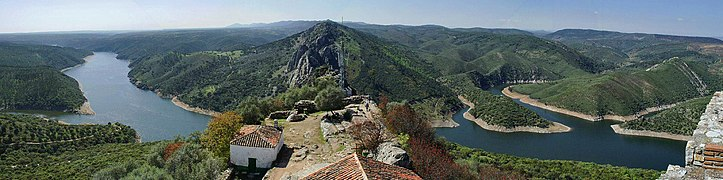
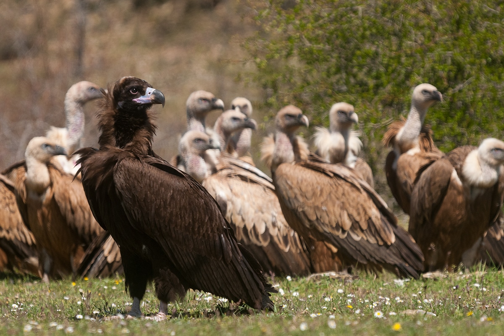
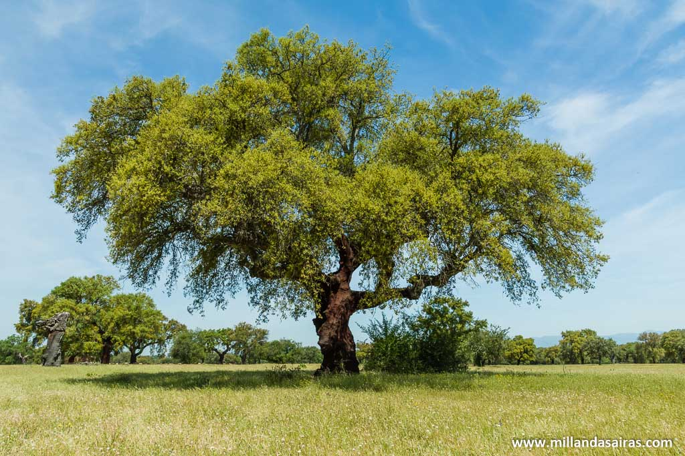
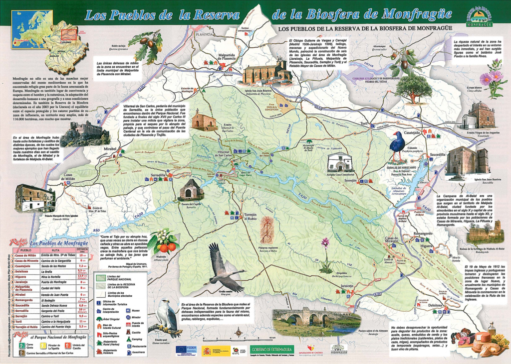

Bienvenido a Monfragüe
Descubre la increíble fauna y flora de esta maravillosa zona, y explora las emocionantes rutas que tiene para ofrecer.
Fauna
Monfragüe es hogar de una diversidad de especies animales, incluyendo aves rapaces como el águila imperial ibérica y el buitre negro.
Flora
La flora de Monfragüe es igualmente impresionante, con una variedad de especies adaptadas a este ecosistema único.
Rutas
Explora las diferentes rutas disponibles para experimentar la belleza natural de Monfragüe y disfrutar de vistas panorámicas inolvidables.
